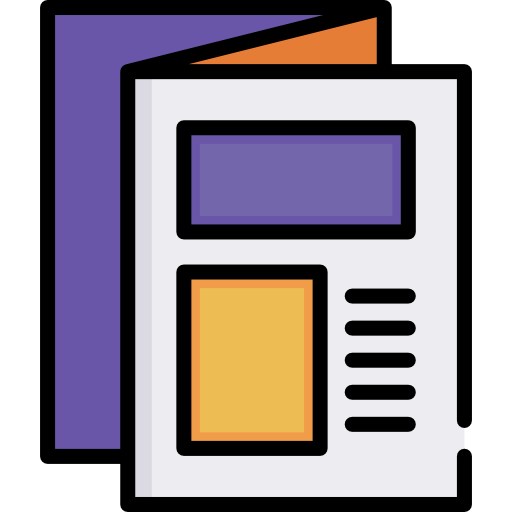

Florencia Martinez - Web Design
About me 
Hi! My name is Florencia and I am an IT Analyst and Programmer.
Currently I'm working as a Web Designer as a freelancer and I'm loving
it! Be welcome to see my web site templates and my Linkedin and
Freelancer profile. If you want to work with me, you can write me an
email or a whatsapp message. Looking forward for your contact!
Education .png)
I studied IT Analyst for three years and I recieved excellent education in programming and web
design. Also I had a formal education in project management, so you
can trust in our agreements. I always going to have your product on
time. I am a programmer too, I always had in mind have an additional
trainning in programming, specially in HTML, CSS and JavaScript. My
goal is deliver a quality product, running perfectly, with clear
coding for easy mantainance.
Portfolio 
Here you will find templates of web pages I have created.
You can choose one and ask me a similar webpage for you, with the
colors you like, the info and photos. This templates are just for you
to have an idea of my work, but you can also ask for something
tottally new!
I can design whetever you want, always responsive, so you can see the
content on your laptop, tablet or mobile phone.
 Git Hub
Git Hub
 +54 9 11 2396 3809
+54 9 11 2396 3809
 florenciapaulamartinez@gmail.com
florenciapaulamartinez@gmail.com
 linkedin.com
linkedin.com